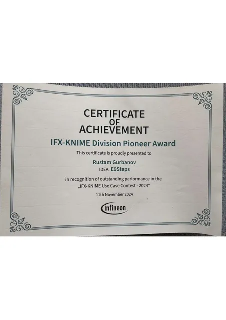
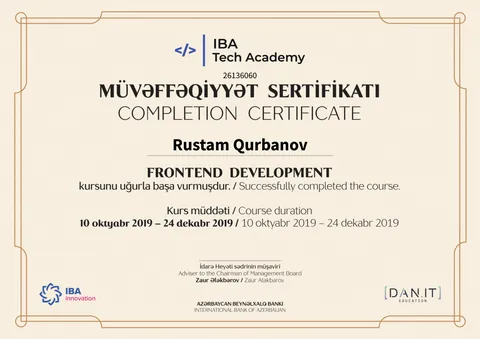
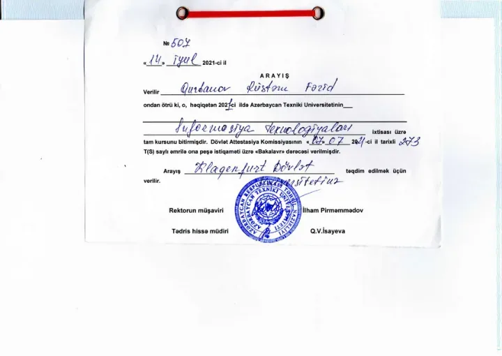
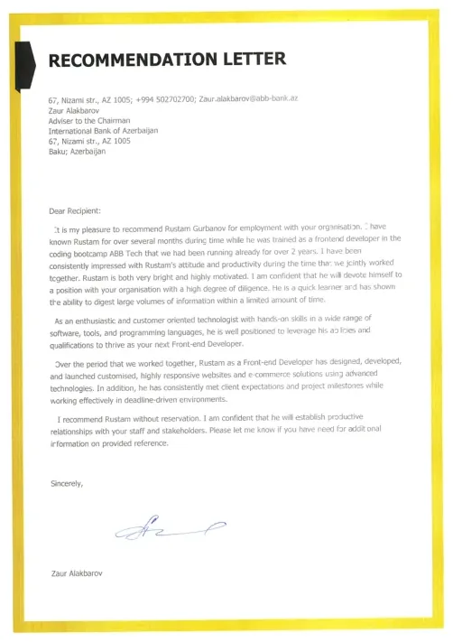
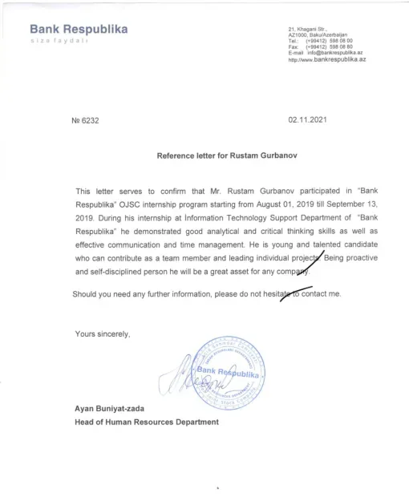

PERSONNEL FILE · RG-2026
RUSTAM GURBANOV
01Vitals
- 10+ Years building
- 20+ Projects shipped
- 5 Languages spoken
- 1 Person, whole pipeline
STATUS BASED IN KLAGENFURT, AUSTRIA · EU / REMOTE
02Experience
-
20232026 2 yrs 7 mos
Digitalization Engineer, Fullstack Developer
Infineon Technologies Villach, Austria
- Shipped fullstack tools for manufacturing digitalization — data workflows, APIs, and operator-facing UIs.
- Built and automated KNIME / OpenShift pipelines; IFX-KNIME Division Pioneer Award (E9Steps, 2024).
- Owned features end to end: TypeScript/React frontends, testing, Git workflows, and production handoff.
IFX-KNIME Division Pioneer Award · 2024 See certificate →
-
20192021 1 yr 8 mos
Frontend Developer, Graphical Designer
International Bank of Azerbaijan Baku, Azerbaijan
- Designed and built frontend interfaces for bank digital products with HTML, CSS, JS, and React.
- Produced brand-aligned graphic assets and UI systems that kept product and marketing in sync.
-
2019 3 mos
Frontend Developer
IBA-Tech Academy Baku, Azerbaijan
- Completed intensive frontend development track (DAN.IT / IBA Tech Academy) and shipped academy projects.
-
20182019 1 yr 3 mos
Help desk specialist
Bank Republic Baku, Azerbaijan
- First-line support for customers and internal teams — triage, resolution, and clear handoffs.
03Education
-
2021 — present
Master of Game Studies and Engineering
Universität KlagenfurtKlagenfurt, Austria
-
2017 — 2021
Bachelor of Information Technologies (IT)
Azerbaijan Technical UniversityBaku, Azerbaijan
04Capabilities
Engineering
- HTML · CSS · JS · TypeScriptInfineon · IBA
- React · API handling · TestingInfineon
- Git · OpenShift · KNIMEInfineon
Design
- Figma · CanvaIBA
- Graphic designIBA
- Scroll animationSelf-directed
AI & Automation
- AI orchestrationSelf-directed
- Cursor · Claude CodeSelf-directed
- Content generationSelf-directed
Marketing
- Content strategySelf-directed
- Social mediaSelf-directed
- Brand storytellingIBA
05Languages
- AzerbaijaniAzərbaycan native
- EnglishEnglish C2
- GermanDeutsch B2
- RussianРусский C2
- TurkishTürkçe C2
06Documents
Five originals. Scanned, not summarised — open any one full size, or take the PDF.
-

IFX-KNIME Division Pioneer Award Infineon certificate of achievement — IDEA: E9Steps, Use Case Contest 2024. Download -

IBA Tech Academy — Frontend Certificate Completion certificate — Frontend Development (Oct–Dec 2019), IBA Tech Academy / DAN.IT. Download -

Bachelor Certificate Degree certificate — Azerbaijan Technical University (Information Technologies). Download -

Reference Letter Professional reference letter (scanned PDF). Download -

Reference Letter 2 Additional professional reference letter (scanned PDF). Download


Scroll to browse · click to open
END OF FILE · RG-2026